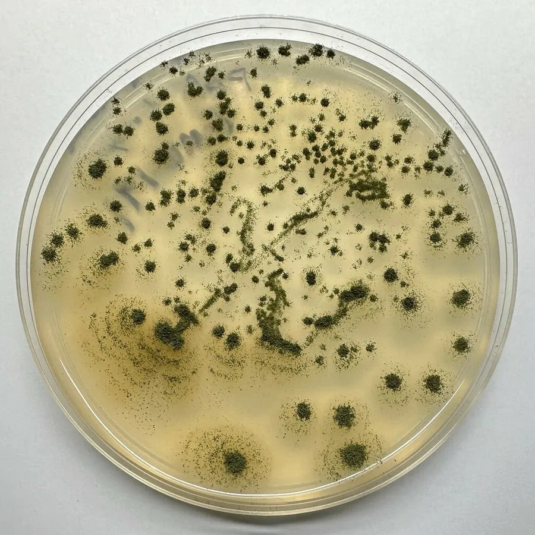

真菌 · 真菌界
米曲霉 Aspergillus oryzae

米曲霉是酿造酱油、味噌和清酒的核心菌种，菌落黄绿色，能大量分泌淀粉酶和蛋白酶，与产毒的黄曲霉是近缘但不同的种。
- 分类
- 门子囊菌门纲散囊菌纲目散囊菌目科曲霉科属曲霉属
- 栖息环境
- 蒸熟的米、豆等发酵基质上，制曲过程中人工培养
- 地理分布
- 东亚酿造业广泛使用，中国、日本、韩国等地
- 保护级别
- 暂无评估（IUCN 未评估，食品工业微生物）
物种志
米曲霉是子囊菌门曲霉科的真菌，菌落呈黄绿色、黄褐色至淡绿褐色，表面粉末状。分生孢子梗直立，顶囊球形或近球形，瓶梗着生在整个顶囊表面，分生孢子链状、表面粗糙。它生长旺盛，能分泌大量淀粉酶、蛋白酶和糖化酶，把淀粉分解成糖、把蛋白质分解成氨基酸，这正是酿造中“制曲”的目的。
米曲霉在东亚的发酵食品中应用历史悠久：酱油、味噌、豆瓣酱和清酒的酿造都离不开它。它被公认为安全的食品工业菌种（GRAS），基因组测序也已完成。米曲霉与产生黄曲霉毒素的黄曲霉亲缘很近、形态相似，但米曲霉的产毒基因簇缺失或失活，不产生黄曲霉毒素，因此可以安全用于食品发酵。制曲时要把蒸熟的米或豆接种米曲霉，控温控湿培养，待菌丝长满、孢子转黄后即可用于发酵。
形态与习性
- 菌落黄绿色至黄褐色，粉末状
- 产酶淀粉酶、蛋白酶、糖化酶
- 用途酱油、味噌、清酒与豆瓣酱制曲
- 安全性公认安全菌种，不产黄曲霉毒素
- 近缘种黄曲霉形态相似但产毒
- 培养蒸熟的米或豆接种后控温控湿
- 科研基因组已完成测序
趣味知识
- 酱油的鲜味来自米曲霉把大豆蛋白分解成的氨基酸。
- 米曲霉和黄曲霉长得很像，但米曲霉不产生黄曲霉毒素。
- 制曲时菌丝长满、孢子转黄，就可以下缸发酵了。
- 米曲霉是国际公认安全的食品工业菌种。